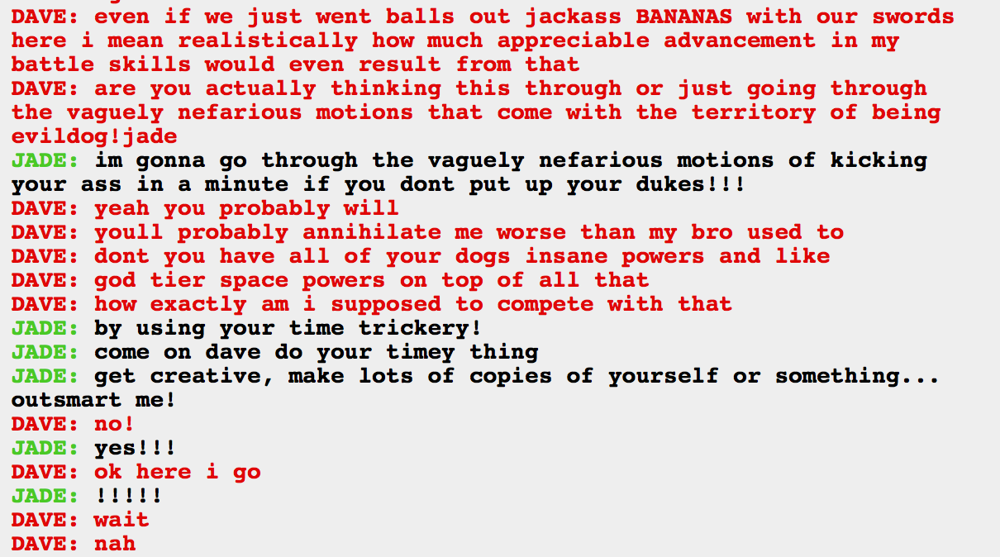

Hey, so, apparently that picture is another retcon! I thought that finally knowing why the retcons were showing up would end them, but I realized that it probably means more about the type of time travel than a meta thing. He’s time traveling and changing things that aren’t supposed to be changed, that’s basically the definition of retcons.